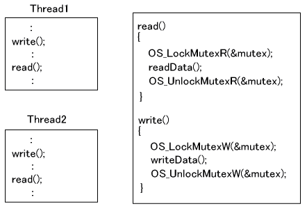

#include <nitro/os.h>void OS_LockMutexR( OSMutex* mutex );void OS_LockMutexW( OSMutex* mutex );| mutex | OSMutex 構造体へのポインタ |
なし。
呼び出したスレッドは、mutex で指定したミューテックスのロックを試みます。
mutex は OSMutex 構造体へのポインタです。
OS_LockMutexR() は read lock を試みます。mutex が使用されていなかったり、mutex が任意のスレッドによって read lock されている場合はすぐに戻ります。この回数は記録されており、同じ回数だけアンロックされなければ
mutex は開放されません。mutex が write lock されている場合や、 OS_LockMutex() のロックに使用されている場合は mutex が開放されるまで呼び出したスレッドは一時停止されます。
OS_LockMutexW() は write lock を試みます。mutex が使用されていなかったり、現在のスレッドにすでに保持されている場合はすぐに戻ります。この回数は記録されており、同じ回数だけアンロックされなければ mutex は開放されません。mutex が read lock されている場合や、write lock されている他のスレッドに保持されている場合や、OS_LockMutex() のロックに使用されている場合は mutex が開放されるまで呼び出したスレッドは一時停止されます。
なお、mutex は OS_InitMutex() で初期化されている必要があります。(他のロック〜アンロックで利用し終わった状態ならばそのまま利用できます)
(例)
OSMutex myMutex;
// Init mutex
OS_InitMutex(&myMutex);
// read lock
OS_LockMutexR(&myMutex);
：
OS_UnlockMutexR(&myMutex);
// write lock
OS_LockMutexW(&myMutex); ←read lock での使用が終わったので myMutex を使える
：
OS_UnlockMutexW(&myMutex);
OS_LockMutexR() でロックした mutex は OS_UnlockMutexR() または OS_UnlockMutexRW() でアンロックしてください。OS_UnlockMutexW() でアンロックすることは出来ません。
OS_LockMutexW() でロックした mutex は OS_UnlockMutexW() または OS_UnlockMutexRW() でアンロックしてください。OS_UnlockMutexR() でアンロックすることは出来ません。
mutex をロックしているスレッドが OS_ExitThread() によって終了したときは、そのmutex は自動的にアンロックされます。
read lock から write lock に移行する関数として OS_LockMutexFromRToW()、OS_TryLockMutexFromRToW() が用意されています。また write lock から read lock に移行する関数として
OS_LockMutexFromWToR()、OS_TryLockMutexFromRToW() が用意されています。両関数ともに移行時にスレッドの切り替わりはありません。
以下のような状況を考えます。

read() はデータを読み出す関数ですが、読むだけでデータを書き換えることはないので複数のスレッドから同時に呼ばれても構いません。但しそのデータが書き込まれているときに読み出されたり、読んでいるときに書き込まれたりしてはいけないので、write()
とは排他することが必要です。mutex が read() でロックされている間は write() のロック関数で停止しますし、write() でロックされている間は read() でロックします。しかし read() でロックしているときに他のスレッドが read() に入ることは出来ます。
write() はデータを書き込む関数ですが、書いている間に他のスレッドがデータを読んだり書いたりしては困ります。write() のロック関数で mutex をロックしている間は、同じ mutex で read ロックは出来ませんし、自分以外のスレッドが
write ロックすることは出来ません。従って write lock 中は他のスレッドが
read() や write() を行うことは出来ません。
OS_InitMutex, OS_UnlockMutex, OS_TryLockMutex, OS_ExitThread
OS_UnlockMutexR, OS_UnlockMutexW, OS_UnlockMutexRW,
OS_TryLockMutexR, OS_TryLockMutexW
OS_LockMutexFromRToW, OS_LockMutexFromWToR
OS_TryLockMutexFromRToW, OS_TryLockMutexFromWToR
2009/03/13 typo修正
2008/12/16 初版